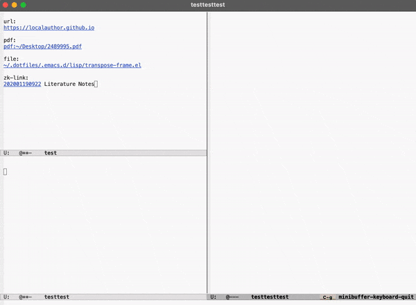

(Anat.) Pertaining to a bone of the shoulder girdle in
most birds, reptiles, and amphibians, which is reduced to
a process of the scapula in most mammals.
This post describes how the Emacs package link-hint can be combined with
ace-window to allow you to select, on-the-fly, which window a link will open in—instead of letting fate, or custom, or Emacs decide for you.
——————————————————————————————
Ace-window is (more than) a fancy window-switcher
The ace-window package, written by abo-abo, offers a handy, full-featured
alternative to the built-in window-switching function other-window. The
package’s primary function—the titular ace-window—overlays a different
character (letter or number) over each visible Emacs window, so you can
switch to the desired window by simply pressing its assigned character. Very
useful, very sleek.
But ace-window is more than just a handy way to switch windows.
The greatness of ace-window truly comes through, however, when it is combined
with other packages.
With ace-window and Embark, open files/buffers in specified windows
In his detailed write-up on using Embark, Karthik Chikmagalur showcases a
killer mash-up of ace-window and Embark, demonstrating how ace-window can be
used for more than just switching windows.
Briefly put, Karthik shows how to incorporate ace-window’s window-selection
function into the opening of a file or buffer from the minibuffer so that, as
he writes, “any buffer/file/bookmark I open is always placed exactly where I
want it to be on the screen.”
An example usage would be:
call find-file
call embark-act on file you wish to open
call my/embark-ace-action-find-file (this is the slightly unwieldy name
Karthik gives to the embark/ace-window function)
select desired window with ace-window
With ace-window and link-hint, follow links in specified windows
Inspired by what Karthik showed was possible, I wanted to incorporate
ace-window with link-hint, so that I could choose which window a link
would open in. The result is a function called link-hint-aw-select:

Using ’link-hint-aw-select’ to open each of the links in the top left window in a different window. First, the desired link is chosen via character overlay, courtsey of link-hint, then the desired window is chosen via character overlay, courtsey of ace-window.
If you’re unfamiliar, link-hint is a package that is conceptually similar to
ace-window: it puts a character overlay on visible links in a buffer so that
you can choose a link to follow by typing its assigned character. (The
conceptual similarity of link-hint and ace-window is not surprising, since
both are based on avy.)
Link-hint can identify a lot of different type of links, such as urls, file
paths, mailto links, org-links, buttons, and dired filenames. New link
types can also be defined by the user. (More on that later.)
As with avy and ace-window, link-hint allows for different actions to
performed on the chosen link. However, there are only two default actions for acting on links: open link and copy link.
Defining a new action is done by defining a new function, in this case the
above-mentioned link-hint-aw-select, which will be entry-point command for all link types:
(defunlink-hint-aw-select()"Use avy to open a link in a window selected with ace-window."(interactive)(unless(avy-withlink-hint-aw-select(link-hint--one:aw-select))(message"No visible links")))
Things get more complicated very quickly, however.
Each action must be tailored to each different link type. Take the case of
the “open” action, for examples: urls open one way—in a browser—and
filepaths open another way—in a relevant application—and email addresses
open another way—in a new draft email. Each action is actually many
different actions, all roughly similar.
When creating a new action, then, it is necessary to make sure that each link
type is associated with a function that will perform the new action in the
appropriate way.
The aw-select action for file links is quite simple:
If different link-types behave similarly, it is possible to create a macro
of our own that will do all of the above very efficiently. This is the case with buttons and dired-filenames, for example:
The same is almost the case with org-links as well, except that by default
org-links are opened using find-file-other-window instead of find-file,
meaning that the above macro wouldn’t work properly.
I prefer to change this setting globally, so that org-links are opened in the
current window, by evaluating the following:
To leave org’s default behavior in place globally, it is necessary to define
a function specifically for org-links, in which the behavior is changed
locally in a let-binding:
Things are actually even a bit more complicated than this with org-links.
Since org handles different link-types internally, the function
link-hint--aw-select-org-link can also be made to handle certain org
link-types differently. For example, if you want http/https links to be
opened externally, there is no reason to call the aw-select behavior for
that type of org-link. This could be accomplished by including something like
the following in the function’s “if” conditional:
I find this functionality really useful in my note-taking environment, where
each of my notes contains several links to other notes. I rarely want to
follow a link in the same window as the note where the link appears. I
typically want to leave that note where it is and open a link somewhere else.
If I have several windows arrayed around my screen, I can use
link-hint-aw-select to open the linked note exactly where I want it to be.
To use this with org, the above configuration is enough. If you use another note-taking environment, you may need to define a new link type.
For example, for use with my own Zettelkasten package zk, I define a new link
type zk-link and a function zk-link-hint-aw-select, along with other
functions necessary to fully incorporate a new link type into the link-hint
system:
(defunzk-link-hint--zk-link-at-point-p()"Return the ID for the zk-link at the point or nil."(and(zk--id-at-point)(thing-at-point-looking-atzk-link-regexp)))(defunzk-link-hint--next-zk-link(bound)"Find the unext zk-link.
Only search the range between just after the point and BOUND."(link-hint--next-regexpzk-id-regexpbound))(defunlink-hint--aw-select-zk-link(id)(with-demoted-errors"%s"(if(>(length(aw-window-list))1)(let((window(aw-selectnil))(buffer(current-buffer))(new-buffer))(zk-follow-link-at-pointid)(setqnew-buffer(current-buffer))(switch-to-bufferbuffer)(aw-switch-to-windowwindow)(switch-to-buffernew-buffer))(link-hint-open-link-at-point))))(link-hint-define-type'zk-link:next#'zk-link-hint--next-zk-link:at-point-p#'zk-link-hint--zk-link-at-point-p:open#'zk-follow-link-at-point:copy#'kill-new:aw-select#'link-hint--aw-select-zk-link)(push'link-hint-zk-linklink-hint-types)
Even though link-hint can be a bit complex under the hood, it is quite
effortless, even elegant, when put in combination with ace-window. Give
it a try and puzzle over what you had done so long without it.
Stendhal might have spent the night in a building near where I live.
There is a plaque on the wall of the building — a bookstore now, specializing in French literature — memorializing the night that Stendhal is said to have stayed there.
With its bilingual inscription and bas relief portrait of the artist, the plaque brings some kind of life to that corner, projecting a line clear to a far side of Europe.
Something of French culture once comforted itself here, if you can imagine.
—————
You’ll have to imagine.
The plaque does not cite its sources. It does not quote from the writer. It does not paint a picture of an event, a time, or a place.
ŠIAME NAME … BUVO APSISTOJES … STENDALIS
DANS CETTE MAISON STENDHAL … FIT ETAPE
Where would one look if one were inclined to dig up the truth of what may or may not have happened in this or another place at this or that time so many decades, centuries since?
But then, who would care to doubt these chiseled records?
—————
All told, the plaque is less a statement of fact than one of values.
“Draw this place closer, in your mind, to what you might already know well,” it says.
“Comfort yourself, that you are not so far away, so disconnected, as you thought—as you might have feared.”
—————
In some letters Stendhal notes his passing, while marching with Napoleon’s army, through various cities and towns in the region. His remarks are spare, revealing an experience of dismal early winter and little else.1
Antanas Vaičiulaitis, “Stendhal in Lithuania,” trans. M. Vasiliauskas, Lituanus: Lithuanian Quarterly Journal of Arts and Sciences 22, no. 2 (1976). ↩︎